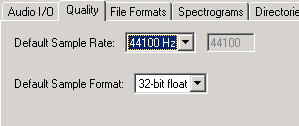

and choose a location and filename
for your project.
and choose a location and filename
for your project.
| Back to the main page | Back to the Tutorial Page |
| Digital Audio Rules of Audacity Setup, Audio Import and Playback Recording with Audacity |
1. Create a new project
This is very important!
Audacity writes all the changed and recorded audio to a directory called Projectname_data, which is located right where you saved the project file itself.
Thus, select and choose a location and filename
for your project.
Please note that when you startup Audacity fresh, only the " Save As..." menu option is available.
To save your project later on, you can also use the keyboard shortcut : CTRL+S
2. Check the Preferences
Again, this is very important!
Press
CTRL+P or go to ...
|
...then check if the right output is selected :

|
| ...set the sample
rate of your choice... (44.1 kHz is the default)  |
...and here's a
crucial screen :
|
The File Formats settings need discussing at this point.
When importing uncompressed audio, there are two ways to do it. "Make a copy of the original before editing" means, that Audacity actually copies the entire audio file that you imported in to its project data directory and in the process sets up the little overview graphics, whose descriptions get stored in the project data directory too.
The second way is to use the original imported audio. You may think we're actually editing this file, but no we aren't. In fact, Audacity will now read the imported file once and simply create the graphics overviews for them in the data directory, and subsequently write to disk all the audio data that you change. The original file is only used for playback. All audio that remains unchanged will be played from the original file.
The advantage of choosing to make a copy of the original is that you avoid trouble, should anything in the original file change.
For example, should you accidentally delete the original file, you're lost.
You have to make up your mind before you start a project. Choose to make a copy of all imported files, and you'll use more space on your hard disk(s), but it will be easier to back up the project too, because all files that have anything to do with your project will be in the project data directory.
The Uncompressed Export Format can be set to WAV or AIFF for now. Please check the fileformats page for further information on export formats.
We'll ignore the Spectrogram settings for now. The Directories setting can be ignored as well for now, because all it sets is the directory to use for recordings, undo data and other stuff, if you haven't yet saved your project. Since we already saved our project, this setting is of no importance to us, though you may want to set it properly later on. Initially this is set to a folder called "audacity_temp_1.2" in the system temporary directory.
3. Import an audio file
There are three ways to do this:
1. Simply drag and drop the audio file in to the Audacity window. (If you're using Mac OS 9 or X, drag the audio file to the Audacity icon instead...)
2. Select Import Audio ... in the Project menu.
3. Use the keyboard shortcut : CTRL+I
Audacity can import WAV, AIFF, AU, IRCAM, MP3 and OGG files. Please refer to the fileformats page for further reference on these audio formats.
4. Playback
The imported file should now be displayed in an audio track. The track will look a little like this, depending on what you imported :

If you're not sure where to find audio material, simply rip some off a CD, or in Windows, check the Media folder in the directory of your Windows installation.
Now click on the green Play button  at the top and you should hear the file you have just imported.
at the top and you should hear the file you have just imported.